Stem shape
The Spine section controls the centre line of each stem: how long it is, in which direction it starts and how it bends on its way to the tip.
Length
- Height trunk, 0.2 to 40 m
- The length of each trunk in metres. A leaning or bending trunk ends lower than its length.
- Length (× parent) branches and roots, 0.02 to 1.5
- The length of each child as a fraction of its parent's length. The crown profile and a length curve then vary it along the parent.
- Length variation 0 to 1
- Random variation of the length. 0.2 lets each stem be up to 20 percent longer or shorter.
- Crown profile
- How the length of branches changes from the bottom to the top of their parent. This gives the crown its outline.
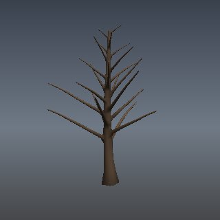
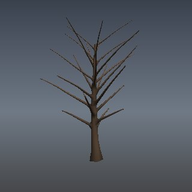
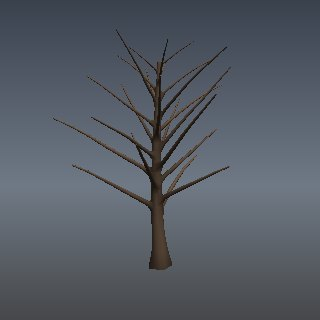
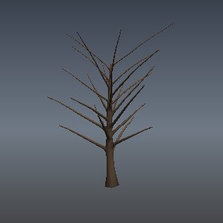
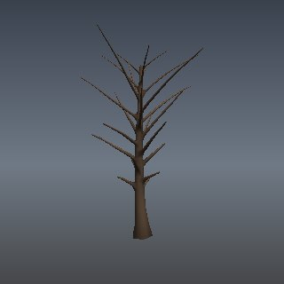
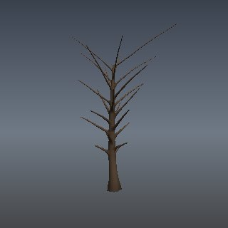
For a profile of your own, set a Length curve on the generator. A length curve replaces the crown profile. See Curves.
Direction
- Lean trunk, 0° to 60°
- Tilts the trunk away from vertical.
- Angle branches, roots and leaves, 0° to 120°
- The angle between a child and its parent at the point where it starts. Small angles point the child along the parent towards its tip, 90° points it straight out, and angles above 90° point it back towards the base.
- Angle variation 0° to 60°
- Random variation of the angle or lean.
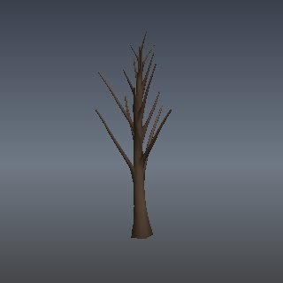
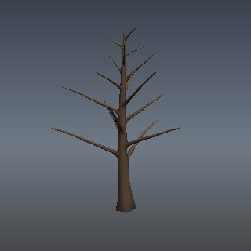
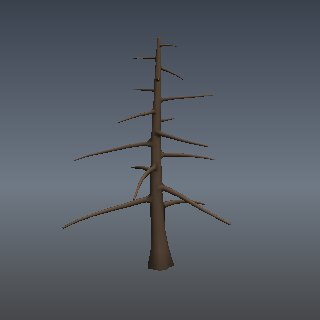
Bending
- Gravity −1 to 1
- Bends each stem as it grows. Positive values make stems droop towards the ground, negative values make them curve upwards towards the light. The effect builds up along the stem, so long stems bend more than short ones. For roots the setting works differently; see Roots.
- Wiggle 0 to 1
- Random changes of direction along the stem, for a natural, meandering line.
- Force response 0 to 3
- How strongly this generator follows the tree's forces. 0 ignores them; 1 is the normal response.
- Kink 0° to 120°
- One sudden bend somewhere in the middle of each stem, as left by a lost leader or an old injury.
- Jitter 0 to 1
- Small, sharp zig-zags along the stem, typical of twigs and old wood.
- Segments 1 to 32
- The number of straight pieces each stem is made of. More segments give smoother curves and more triangles. Lower levels of detail reduce the count automatically.
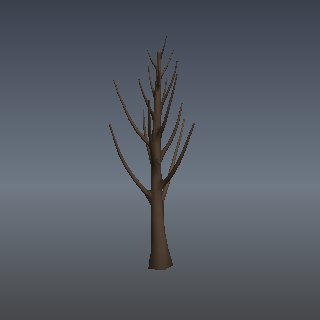
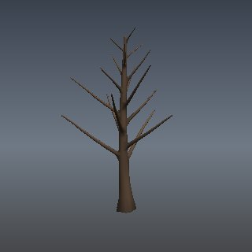
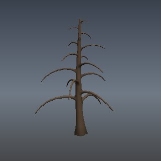
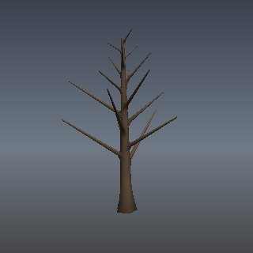
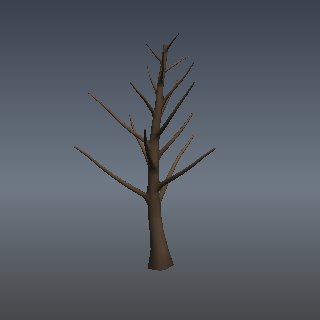
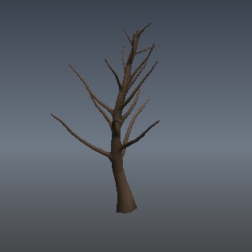
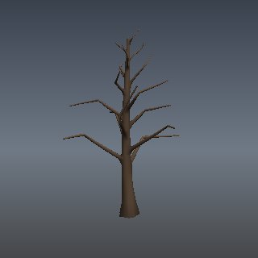
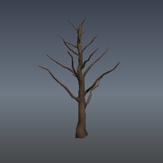
Splitting
In many broadleaf trees, such as oaks, maples and willows, the trunk doesn't run to the top of the crown: somewhere in the crown it divides into a few big limbs of about the same size. Conifers and birches keep one leader that tapers to a thin tip. Every trunk, branch and root generator has its own split settings, so trunks can divide into limbs, main branches can fork and roots can branch into a Y.
- Split No split, 2 to 5 leaders
- Divides each stem of this generator into this many leaders. The stem carries on as one of them. The leaders share the stem's wood, so each one is thinner than the stem below the split, and every leader tapers to a thin tip. A trunk's leaders curve back up towards the light.
- Split height 0.05 to 0.95
- Where along the stem it splits, as a fraction of its length.
- Split angle 0° to 80°
- How far each leader leans away from the stem's direction.
The children of a split stem, such as the branches on a split trunk, spread over the stem and its leaders above the split. No children grow in the crotch where the leaders part. The Oak, Maple and Willow presets split their trunks into three leaders.
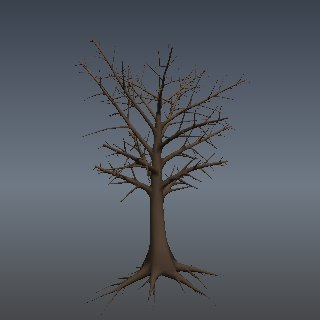
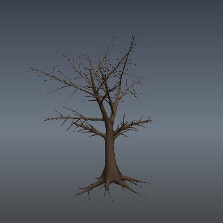
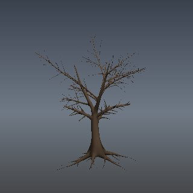
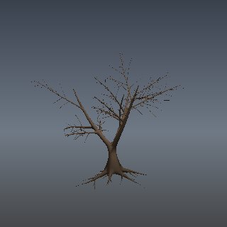